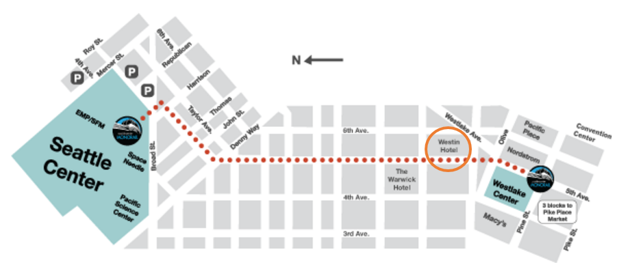
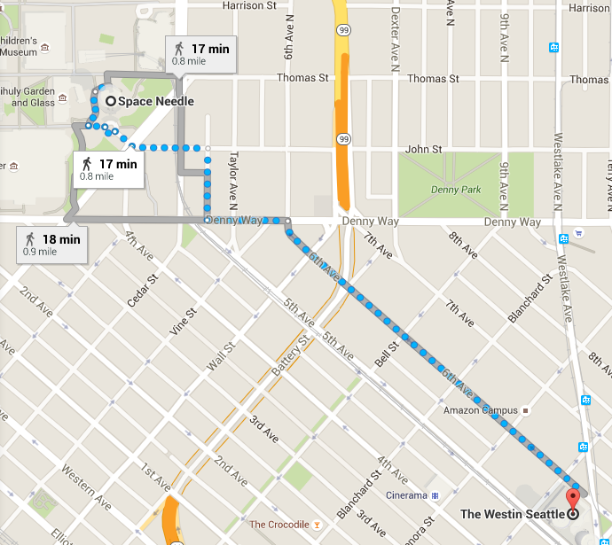

ICME 2016 Reception
Time: 18:30 - 22:00, Monday, July 11th, 2016
Location: Space Needle
Commute options between Westin Hotel and Space Needle:
- Monorail: The recommend commute option is Seattle Monorail. It departs every 10 minutes between Space Needle and Westlake Center, which is a 3-5 min walk from the Westin Hotel (see the map below). There are no other stops. It closes at 11pm during the summer. One-way ticket for adult is $2.25 and roundtrip is $4.5. Cash only.

- Walk: It's about a 20-minute walk one way. It should be a pleasant walk both ways as the sunset is 9:06pm and it won't become dark until 10:40pm. The chance of rain is very low. Erring on the side of caution, we recommend walk in small groups back to the hotel. The walk map is shown below:

- Car: It's a short 6-min drive. Parking at Space Needle could be expensive so we recommend using Uber or cab services. uberX costs around $6 and cab around $10.
ICME 2016 Banquet
Time: 19:00 - 22:00, Wednesday, July 13, 2016
Location: Westin Hotel, Grand Ballroom
|